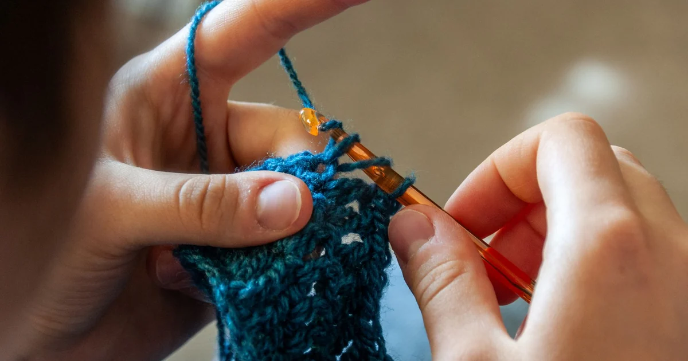
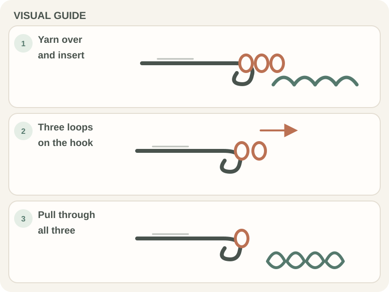

Stitches & Techniques · Beginner guide
How to Make a Half Double Crochet Stitch
Make a US half double crochet by yarning over, pulling up a loop, then drawing through all three loops.

US half double crochet (hdc) sits between single and double crochet in height. Its final pull-through is distinctive: all three loops leave the hook together.
Before you begin
Use a small swatch and a pattern written in US terms. A UK half treble is not the same named stitch as US hdc.
Step-by-step instructions
- Yarn over once, then insert the hook into the stitch.
- Yarn over and draw up a loop. Three loops should now be on the hook.
- Yarn over again and draw through all three loops in one motion.
- Repeat in the next stitch, keeping the insertion depth consistent.

What to check
Three loops, one final pull-through
One active loop remains after completion. If the hook catches the third loop, pause and loosen the yarn slightly rather than forcing it through.
Frequently asked questions
How many loops are on the hook before finishing?
Three for a standard US half double crochet. Draw through all three together.
Does the turning chain count as a stitch?
That depends on the pattern. Check its notes and apply that rule consistently.
Can I work into one loop for a different texture?
Yes, if the pattern asks for it. Working under one loop changes the fabric’s look and flexibility; it is not the default for every project.
What makes a half double crochet different from a half treble?
US and UK stitch names differ. A US half double crochet and a UK half treble are not the same stitch, so check the pattern’s terminology.
Read the three loops before the final pull-through
After the yarn-over, insertion, and draw-up, the hook carries three loops: the original active loop, the loop from the yarn-over, and the loop drawn through the stitch. Catch the working yarn and draw through all three in one controlled motion. If the hook catches only two, pause and identify which loop stayed behind instead of tugging harder. The completed stitch leaves one active loop and a visible post below its top V.
Use loop height to control the fabric
A loop pulled too low can make the stitch tight; a loop pulled too high can leave a loose top. Let the drawn-up loop reach the height of the stitch tops before completing the pull-through. Keep the hook shaft level as you work across the row. If a swatch looks uneven, compare several stitches together rather than changing tension after each one. The pattern’s gauge and yarn determine the finished fabric, so a stitch can look different in a different fiber or hook size.
Find the insertion point named by the pattern
For a foundation row, the pattern may direct you to a particular chain from the hook. For later rows, locate the top V of the stitch and use the loop or loops the instructions name. Working under only the front or back loop changes the texture and should be deliberate. If the fabric is dense, tilt the edge toward the light and separate the top strands with the hook tip. This helps prevent entering the post or splitting the yarn.
Check edge stitches and row height
A half double crochet row is taller than a single-crochet row, so the turning chain may need more height than in a shorter stitch. Follow the pattern for the chain count and whether it counts as a stitch. If your edge rises or dips, check both the chain and the first or last stitch before changing your tension. Count the top Vs across the row and compare the row height with a small gauge sample when the finished size matters.
When half double crochet suits the pattern
A half double crochet gives more height than a US single crochet and less height than a US double crochet. That can make it useful when a pattern wants fabric to grow faster than a short stitch while keeping a less open texture than a taller stitch. The exact drape still depends on yarn, hook size, and tension. Do not substitute by height alone: changing stitch type can alter the row gauge and texture. Work a small swatch if you need to compare the fabric with a pattern’s measurements.
Common mistakes and how to fix them
- Pulling through before all three loops are ready. Count the loops on the hook before the final yarn-over. If there are fewer than three, the draw-up stage may have missed a loop.
- Yanking the hook through a tight group. That can split the yarn or distort the top. Loosen the yarn hand and guide the hook head through the loops.
- Using a US stitch in a UK pattern. The stitch names differ. Confirm the terminology before comparing the finished height.
Tips that make it easier
- Practice on a short row so you can watch the three-loop stage without managing a large project.
- Keep the drawn-up loop near the height of the neighboring stitches.
- Look for the top V after each stitch; it is the completed stitch you count.
A useful next step
Check the pattern’s instructions against a short sample before continuing, then follow its stated stitch and edge rules.